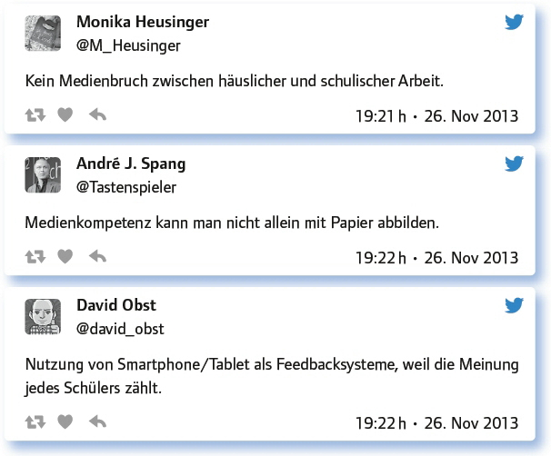
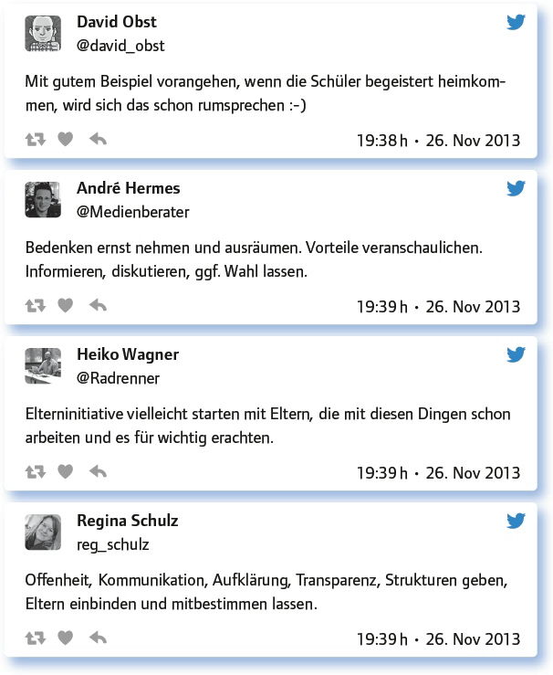

von Peter Jochum
Welche Sorgen haben Eltern, wenn es um Smartphones, Tablets, Laptops etc. in der Schule geht?
Hier wurden als Sorge ökonomische Gründe vermutet bis hin zu einer Angst vor Missbrauch der digitalen Technik.
Der Gruppenzwang / soziale Druck, dass ihr Kind es auch haben muss? Viele können es sich nicht leisten.
Wer lässt seine Kinder mit jemandem, der sich nicht auskennt, auf eine Klettertour gehen?
Missbrauch von Technik, Zugriff auf nicht-jugendfreie Inhalte, Verletzung der Aufsichtspflicht im weitesten Sinn.
Soziale Benachteiligung, Cybermobbing, Konzeptlosigkeit, WLAN-Strahlung, Diebstahl, lernt nicht mehr lesen/schreiben/rechnen.
Beschäftigen sich mit dem Gerät / den Apps und nicht mit den Unterrichtsinhalten.
„Ich hab das neumodische Zeugs auch nicht gehabt und aus mir ist was geworden. Nur zum Kommerz da.“
Bei BYOD vielleicht aufgrund des Gruppenzwangs Angst, dass neue Geräte angeschafft werden müssen.
Aber auch aus gesundheitlichen Gründen machen sich Eltern anscheinend Sorgen:
Tablets sind unergonomisch: Bildschirm zu klein, Tastatur schlecht, kein 10-Finger-Sys- tem, …, Haltungsschäden, Nackenstarre.
Mein Kind wird dement, vereinsamt, wird gemobbt, wird mit Schund überhäuft, und und und … siehe: http://t.co/vQKIoSvmDY
Wie kann eine Schule auf berechtigte Sorgen von Eltern gegenüber Smartphones & Co. angemessen eingehen?
Nach Meinung der Teilgeber können Schulen mithilfe von Information, Transparenz, Offenheit sowie der Integration digitaler Aktivitäten in ein Gesamtkonzept Eltern in dieser Frage sinnvoll begegnen und sie ins Boot holen.
Aufklärung, Medienpädagogik, Prävention
Indem man sie Unterricht erleben lässt, wo sinnvoller Einsatz demonstriert wird.
Best practices zeigen, Eltern „ins Boot“ holen, Elternabend, InternetScouts an Schule ausbilden, Mediencurriculum entwickeln.
Mit Argumenten, z. B. in Homepageberichten, auf Elternabenden, ExploreCreateShare- Partys etc. Argumente siehe: http://t.co/vQKIoSvmDY
Eltern ernst nehmen und genau sagen, was man vorhat – und warum.
Medienpädagogik und -erziehung, Entwicklung von Medienkompetenz, klare Regeln bei der Nutzung im Unterricht.
Wer Eltern überzeugen will, sollte die Schulleitung und den Elternbeirat aktiv einbeziehen.
Smartphone als Tool begreifen, mit dem man arbeiten und es weglegen kann: Das überzeugt Eltern.
Indem man überhaupt erst einmal einen Konzept für den Einsatz hat, was ich bei den meisten ehrlicherweise bezweifle.
Welche Argumente haben Lehrer für den Einsatz digitaler Technik in der Schule?
Eine Auswahl von Argumenten findet sich hier:

Wie wird digitale Technik im Bereich der Elternarbeit (bereits) sinnvoll eingesetzt?
Die Teilgeber nannten verschiedene Möglichkeiten. Neben dem schon vielerorts eingesetzten E-Mail-Verteiler wurde die Homepage der Schule mit einem Login-Bereich für Eltern benannt, in dem sie sich auch Formulare herunterladen können, ein Elternstammtisch wurde über Doodle organisiert u. v. m.:
Bei uns ist ein Eltern-/Notenportal angedacht, wo die Eltern jederzeit über die Leistungen der Kleinen Infos einholen können.
Homepage mit Login-Bereich für Eltern für Infos, Formulare …
In Form von Weblogs, z. B. für den vergangenen Abijahrgang: http://t.co/BPC3Rprr1Q
Homepage mit Information und Präsentation, E-Mail Verteiler.
Versuch, Elternsprechtag digital zu organisieren, ist gescheitert.
Elterninfos werden digital abgelegt – Fördermöglichkeiten in digitaler Form für zu Hause, da sind Eltern sehr dankbar.
Vertretungsplan ist online, bei spontanem Entfall nützlich. Fotos vom Schullandheim bei Dropbox hochgeladen.
Schulhomepage und viel genutztes Klassenwiki mit Hausaufgaben, Terminen, Lerntipps, Links zu unterrichtsrelevanten Inhalten.
Informationen an Elternabend digital aufbereiten. Überhaupt: Formulare digital verfügbar machen!
Elternstammtisch über Doodle organisiert, klappte sehr gut, Gdrive Dokument über Probleme in der Klasse an die Eltern gesendet.
Die Schlussfolgerungen zu dem Thema?

Fazit:
Wer Eltern vom Digitalen überzeugen möchte, braucht ein digitales Methoden- und Medienkonzept. Er holt die Schulleitung ins Boot und bindet die schulischen Entscheidungsgremien ein. Eltern wollen informiert und involviert werden, ihre Einwände ernst genommen sehen. Solange niemand benachteiligt, ausgeschlossen oder unter Druck gesetzt wird, stehen Eltern dem Thema Digitalisierung offen gegenüber, Totalverweigerer sind die Ausnahme. Und für radikale Medienasketen lässt sich immer eine analoge Alternative finden.
Link zum vollständigen Protokoll: